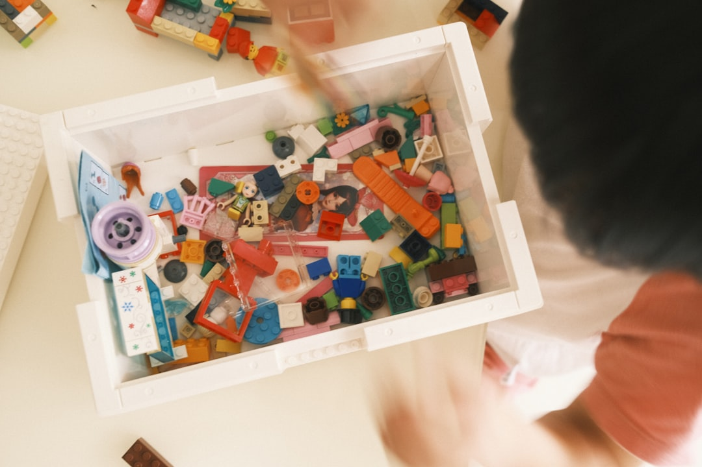

Informação clara e apoio especializado
para você e sua família sobre o
Transtorno do Espectro Autista.

Acreditamos que cada pessoa com TEA possui talentos únicos e merece todo o suporte necessário para alcançar seu pleno potencial. Nossa missão é ser essa ponte entre necessidade e solução.
“Cada pessoa no espectro é única. Nosso papel é garantir que nenhuma família caminhe sozinha.”